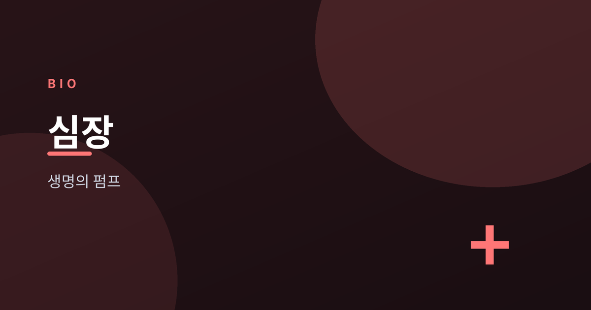
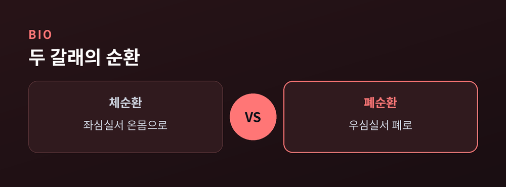
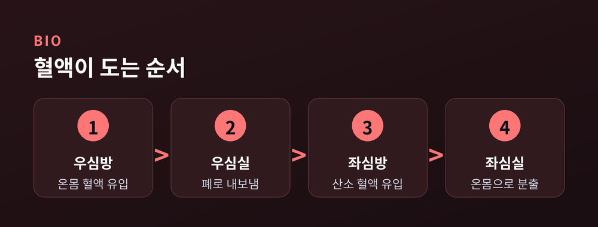
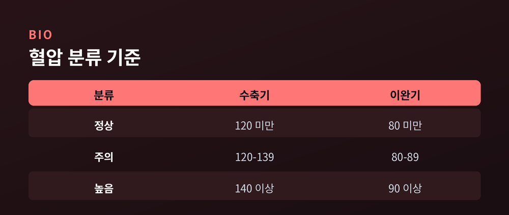
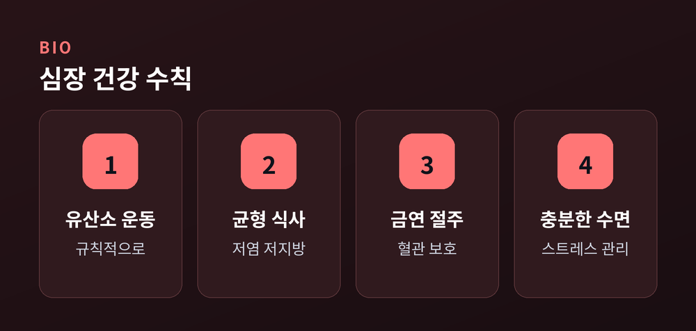

쉼 없이 뛰는 생명의 펌프

우리 몸에는 태어나기 전부터 죽는 순간까지 단 한 번도 쉬지 않고 움직이는 기관이 있습니다. 바로 심장입니다. 주먹만 한 크기에 무게는 300그램 안팎에 불과하지만, 하루에 약 10만 번을 뛰며 온몸 구석구석에 혈액을 밀어 보냅니다. 심장이 하는 일을 한마디로 요약하면 '펌프'입니다. 산소와 영양분을 실은 혈액을 온몸으로 보내고, 이산화탄소와 노폐물을 실은 혈액을 다시 거두어들이는 순환의 중심축인 셈입니다.
이 글에서는 심장이 어떻게 생겼는지부터 시작해, 혈액이 몸을 도는 두 개의 커다란 순환 경로, 심장 스스로 박동을 만들어 내는 전기신호, 그리고 혈압이 우리에게 알려 주는 신호까지 차근차근 살펴보겠습니다. 복잡해 보이지만 원리를 알고 나면 의외로 명쾌한 구조를 가지고 있습니다.
핵심을 먼저 말씀드리면, 심장은 4개의 방과 판막으로 이루어진 정교한 이중 펌프이며, 혈액은 체순환과 폐순환이라는 두 개의 큰 고리를 따라 끊임없이 돕니다. 이 순환이 원활할 때 우리 몸의 모든 세포가 제 기능을 유지할 수 있습니다.
심장은 가운데 벽을 기준으로 좌우로 나뉘고, 다시 위아래로 나뉘어 모두 4개의 방을 이룹니다. 위쪽의 두 방을 심방, 아래쪽의 두 방을 심실이라고 부릅니다. 심방은 혈액을 받아들이는 대기실 역할을 하고, 심실은 받은 혈액을 힘차게 내보내는 실질적인 펌프 역할을 합니다. 특히 온몸으로 혈액을 보내는 좌심실은 벽이 가장 두껍고 강한 근육으로 이루어져 있습니다.
각 방 사이와 심장에서 혈관으로 나가는 출구에는 판막이 자리 잡고 있습니다. 판막은 혈액이 한 방향으로만 흐르도록 막아 주는 일종의 문입니다. 심장이 수축하고 이완할 때 판막이 정확한 순간에 열리고 닫히면서 혈액이 거꾸로 새지 않도록 합니다. 우리가 청진기로 듣는 '두근두근' 하는 심장 소리는 사실 이 판막이 닫히면서 나는 소리입니다.
혈액이 몸을 도는 길은 크게 두 개의 커다란 고리로 나뉩니다. 이를 2대 순환이라고 합니다. 첫 번째는 체순환으로, 좌심실에서 출발한 산소가 풍부한 혈액이 대동맥을 타고 온몸의 세포에 산소와 영양분을 전달한 뒤, 노폐물을 싣고 우심방으로 돌아오는 경로입니다.
두 번째는 폐순환입니다. 온몸을 돌고 온 산소가 부족한 혈액은 우심실에서 폐동맥을 통해 폐로 향합니다. 폐에서 이산화탄소를 내려놓고 새로운 산소를 실은 뒤, 폐정맥을 거쳐 좌심방으로 돌아옵니다. 이렇게 심장은 온몸으로 보내는 펌프와 폐로 보내는 펌프, 두 개의 펌프를 동시에 돌리는 이중 구조로 작동합니다.

피 한 방울의 여정을 순서대로 따라가 보면 심장의 작동 원리가 한눈에 들어옵니다. 온몸을 돌고 온 혈액은 먼저 우심방으로 들어옵니다. 이어 판막을 지나 우심실로 내려간 뒤, 폐동맥을 통해 폐로 나가 산소를 채웁니다.
산소를 가득 실은 혈액은 폐정맥을 타고 좌심방으로 돌아오고, 다시 좌심실로 내려갑니다. 좌심실이 강하게 수축하면 혈액은 대동맥을 통해 온몸으로 뿜어져 나갑니다. 이 한 바퀴가 쉼 없이 반복되면서 우리 몸의 모든 세포가 살아 있는 상태를 유지합니다.

흥미로운 사실은 심장 안을 가득 채운 혈액이 정작 심장 근육 자체에는 산소를 공급하지 못한다는 점입니다. 쉼 없이 일하는 심장 근육에 산소와 영양을 대는 전용 혈관이 따로 있는데, 이것이 바로 관상동맥입니다. 심장 표면을 왕관처럼 감싸고 있다고 해서 붙은 이름입니다.
관상동맥은 심장 근육의 생명줄이나 다름없습니다. 이 혈관이 좁아지거나 막히면 심장 근육에 산소 공급이 끊겨 심각한 문제가 생길 수 있습니다. 그래서 관상동맥의 건강은 곧 심장 전체의 건강과 직결됩니다. 평소 혈관을 깨끗하게 유지하는 생활 습관이 중요한 이유이기도 합니다.
심장이 놀라운 이유 중 하나는 외부에서 명령하지 않아도 스스로 박동을 만들어 낸다는 점입니다. 그 비밀은 전기신호에 있습니다. 우심방 위쪽에는 동방결절이라는 작은 세포 집단이 있는데, 이곳에서 규칙적으로 전기신호를 만들어 냅니다. 동방결절은 심장의 천연 박동조율기, 즉 '자연 페이스메이커' 역할을 합니다.
동방결절에서 시작된 전기신호는 심방을 거쳐 심실까지 정해진 길을 따라 퍼져 나갑니다. 이 신호에 맞추어 심방과 심실이 순서대로 수축하면서 혈액이 질서 있게 흐릅니다. 안정 시 성인의 심장은 보통 1분에 60~100회가량 뛰며, 운동을 하거나 긴장하면 이 리듬이 빨라집니다.
혈압은 혈액이 혈관 벽을 밀어내는 힘을 뜻합니다. 혈압을 잴 때 나오는 두 개의 숫자 중 높은 값은 심장이 수축해 혈액을 내보낼 때의 압력인 수축기 혈압이고, 낮은 값은 심장이 이완해 다시 혈액을 채울 때의 압력인 이완기 혈압입니다. 일반적으로 두 값을 함께 보아 심혈관 건강 상태를 가늠합니다.

건강한 심장을 오래 유지하려면 특별한 비법보다 꾸준한 생활 습관이 중요합니다. 규칙적인 유산소 운동, 짠 음식과 포화지방을 줄인 균형 잡힌 식사, 금연과 절주, 충분한 수면과 스트레스 관리가 대표적입니다. 이런 습관은 관상동맥을 건강하게 지키고 혈압을 안정적으로 유지하는 데 도움을 줍니다.

지금까지 심장의 구조와 혈액순환의 원리를 살펴보았습니다. 심장은 4개의 방과 판막으로 이루어진 이중 펌프이며, 체순환과 폐순환이라는 두 고리를 따라 혈액을 돌리고, 동방결절이 만드는 전기신호로 스스로 박동합니다. 이 정교한 시스템이 매일 10만 번씩 반복되며 우리 생명을 떠받치고 있습니다. 다만 이 글의 내용은 일반적인 건강 정보이며, 가슴 통증이나 두근거림, 호흡 곤란 같은 증상이 있다면 반드시 심장 전문의와 상담하시기 바랍니다. 오늘 하루, 쉼 없이 뛰고 있는 내 심장에 작은 관심을 기울여 보는 것은 어떨까요.